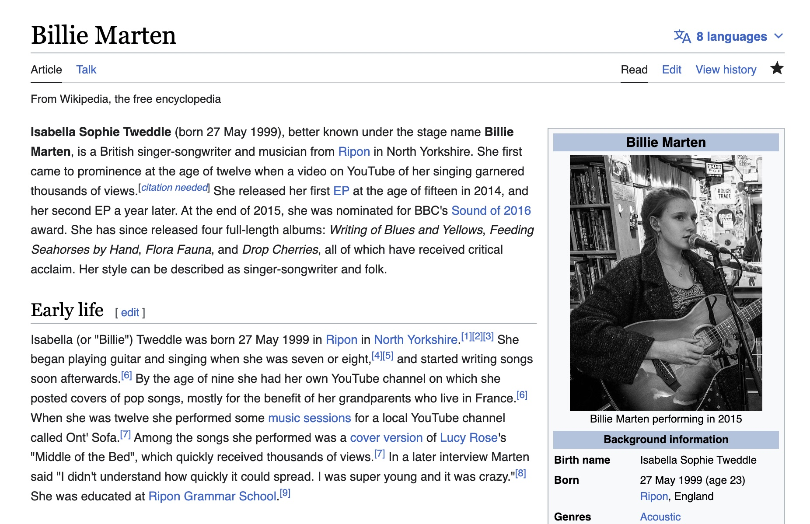

A Reflection on Wikipedia
Visit my contributions to Wikipedia here!
In public school, I was always steered away from Wikipedia as a resource. This I believe impacted how I felt moving into this unit, and allowed me to look at what I was taught with a critical eye and different perspective. The previous viewpoint I was taught was definitely what held me back and made me nervous to start working with Wikipedia from the editing and contributing side.
I was able to handle editing complex sentences pretty well because I was just looking for things that sounded clunky. I was not actually handling adding or deleting any information which felt like a comfort to me, because I did not feel qualified to do something like that. When it came time for me to actually add my own research and information to an article, I felt a lot more at ease when I could find things to add on a topic I was well versed in. For example, I added new album and release date information for one of my favorite artists. I felt comfortable contributing this information because it was a familiar topic and I was able to find credible sources to cite everything I added. I was nervous again when tackling the “article for deletion” part of the assignment, merely because it felt like I had to actually communicate with people who were more qualified to contribute on Wikipedia than I was. Upon doing my research and then commenting, the task did not feel as daunting then as it did at first.
I think I’m far from “knowing” Wikipedia, but I am definitely a little ways down the path. If I were to continue practicing making routine edits and contributing to talk pages, I would probably get closer, but to an understanding of Wikipedia rather than a knowledge. I don’t even know if someone who was a very experienced editor could ever know every single in and out of Wikipedia. I think being a Wikipedia editor is more than just knowledge of making edits or knowledge of a subject but more of an openness to contribute and collaborate; a desire to share. In the context of Wikipedia gaining more editors, I think the best course of action would be to address the opinions surrounding Wikipedia and how it is an unreliable source. Unlike what myself and many peers were taught, Wikipedia is actually very reliable because of how many contributors there are. Altering this stigma might encourage more people to get involved. Additionally, getting more editors means that the content on the site is getting more accurate and fine-tuned with each new set of eyes on it. There is no one kind of specific editor that should contribute to Wikipedia. If the entire site was edited by thousands of the same kind of person, varying perspectives and opinions would fall through the gaps. These differences and collaborative edits are what make Wikipedia what it is.